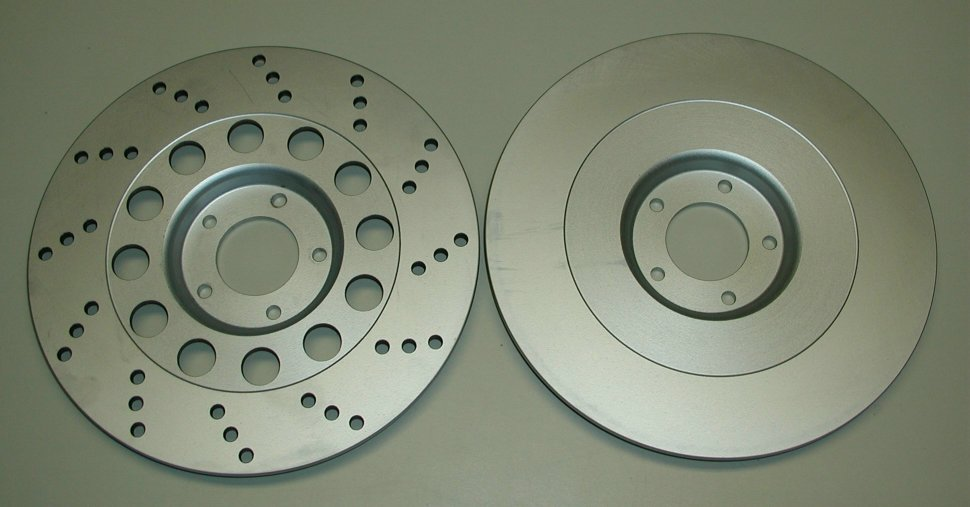
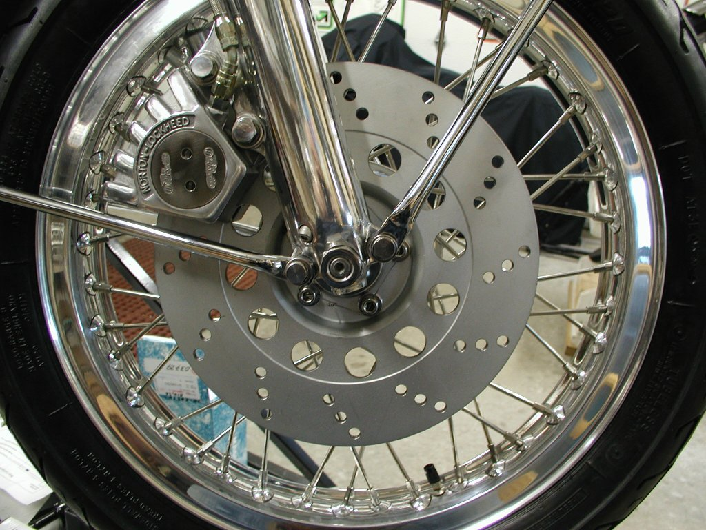

This picture shows a new rotor on the right (06-1885, undrilled) and a new lightened rotor on the left
(06-1885/LR, drilled for the right side).
There are two drilling patterns; 06-1885/LL - Left side pattern and 06-1885/LR - Right side pattern.
The normal rotor drilling pattern is the right rotor and is used on the front of all pre-MK3 Commandos and the rear of the MK3 Commando.
The left rotor is only used on the front of the MK3 Commando. The left drilling pattern is the mirror image of the right
drilling pattern so the hole pattern spirals in the same direction as the right.
The lightened rotor is approximately 1/2 pound lighter than the undrilled rotor.
At this time we are not offering the service to blanchard grind or lighten customers rotors.

This picture shows a new lightened rotor (06-1885/LR) mounted on the front wheel of a Commando.
The current prices are:
- 06-1885, New Rotor
$285.00.
- 06-1885/LR, New lightened rotor drilled for the right side.
$420.00.
- 06-1885/LL, New lightened rotor drilled for the left side.
$420.00.
With a painted rotor the surface where the brake pads rub
against the rotor (the friction surface), that paint needs to be removed for maximum braking efficiency.
Andover Norton paints new rotors and we paint our used rotors.
The reason for painting the friction surface of the rotor is to keep the rotor from rusting before that
rotor is put into service and to paint the holes on the lightened rotors.
The best way to remove this paint is to mount an old set of brake pads in your caliper and VERY CAREFULLY ride your bike,
applying the brakes to burn off the paint. Once the paint has been removed, replace the old pads with new pads and you should be good to go.
Norton Parts …..Wheels, Brakes…..Brakes
This page was written and designed by F. H. Eaton
& Associates if you have any questions or comments please
contact us at info@fheaton.com